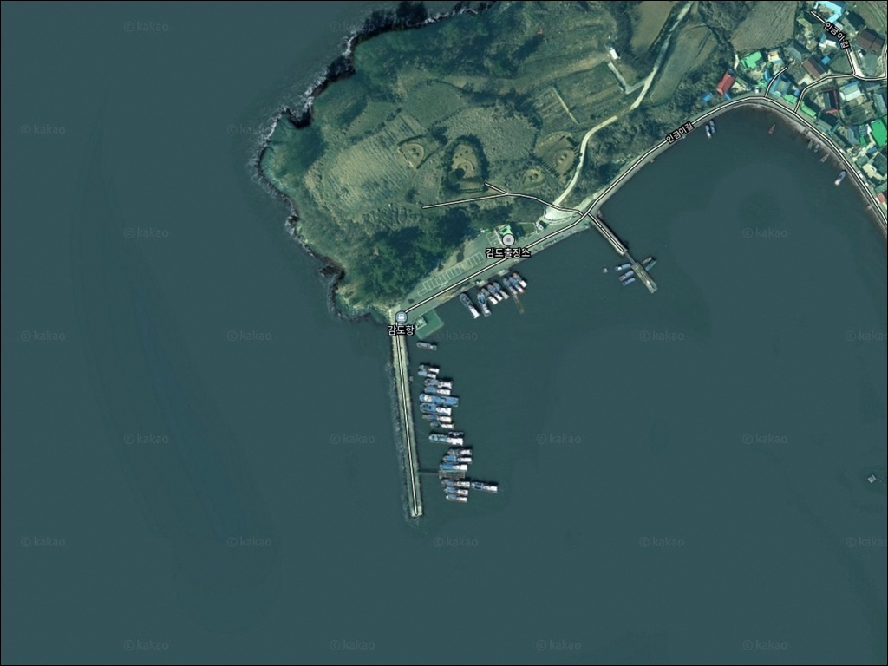
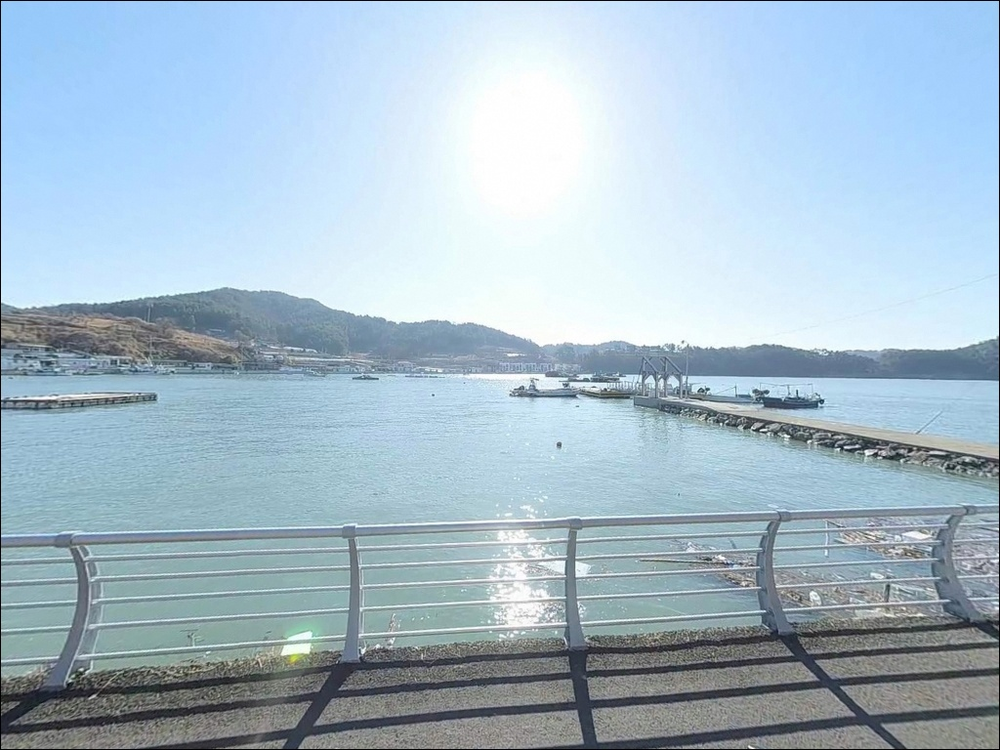
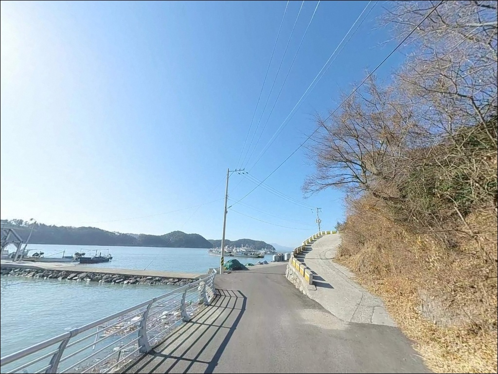
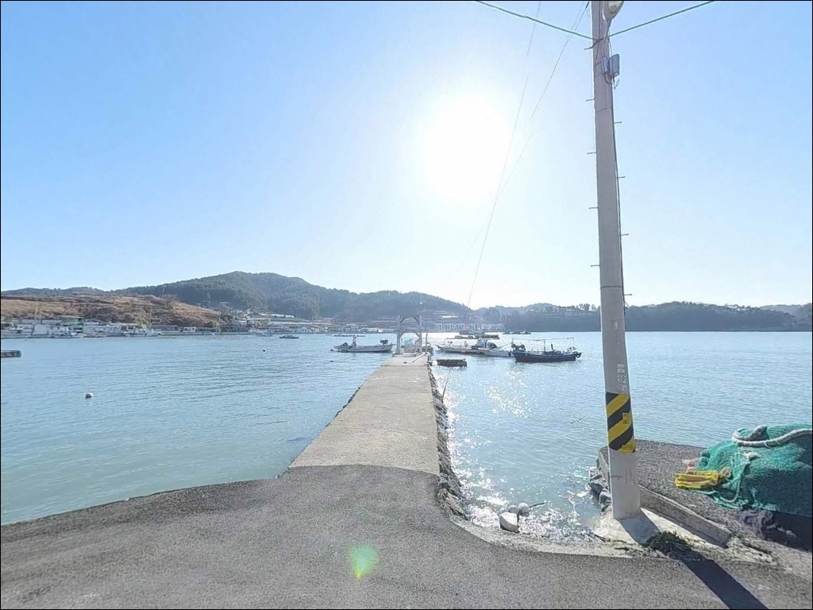
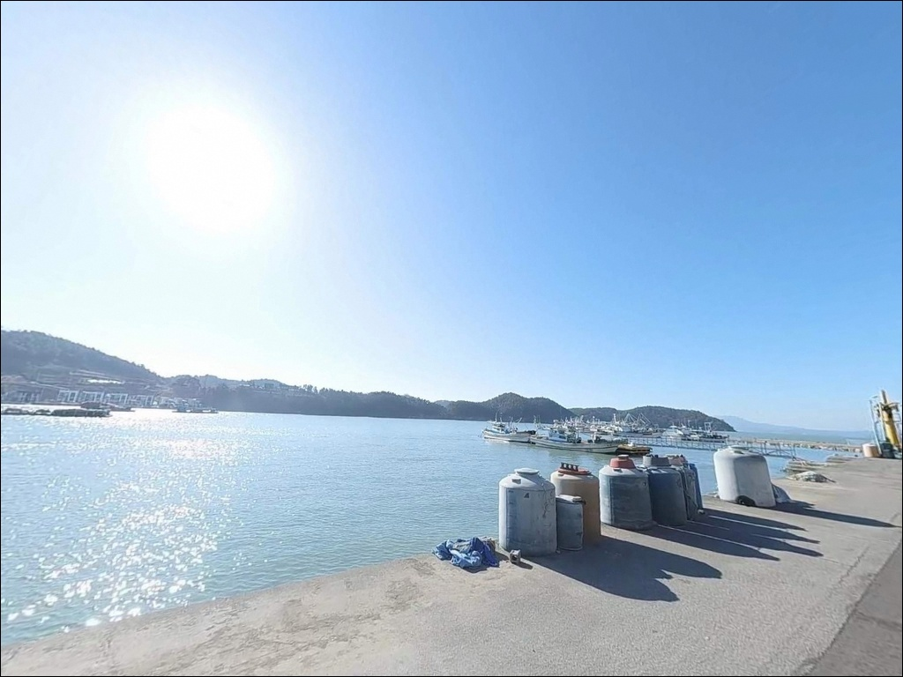
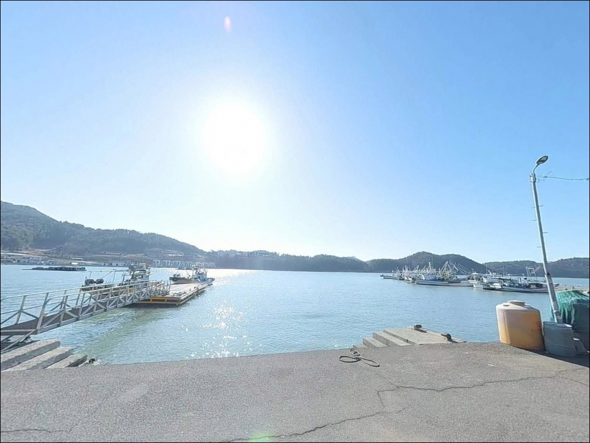
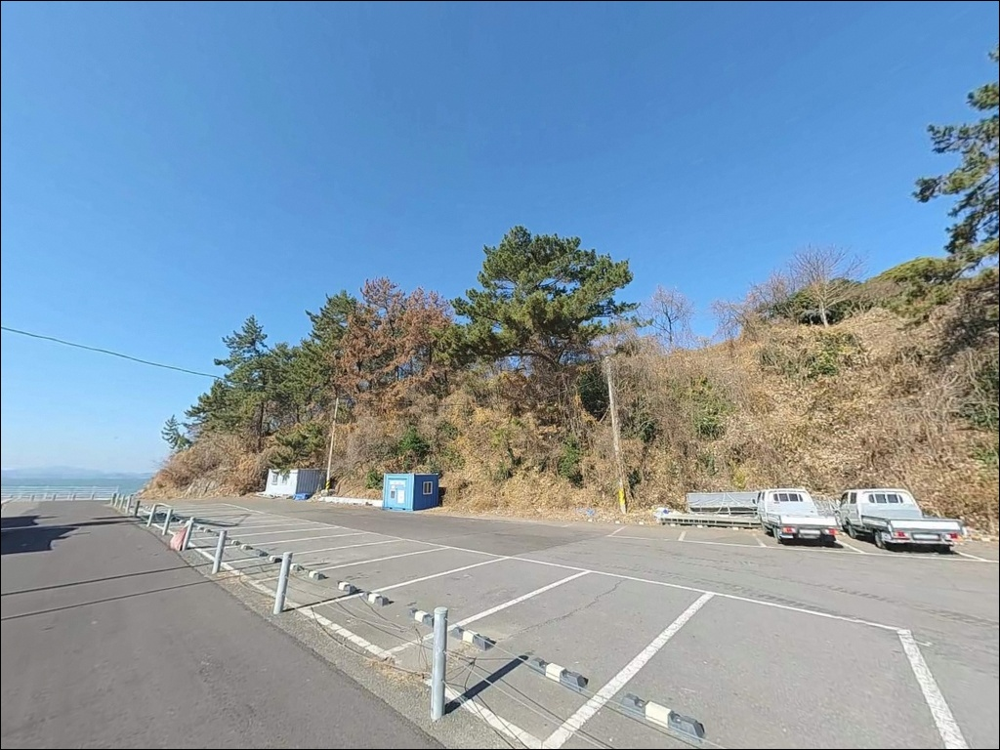
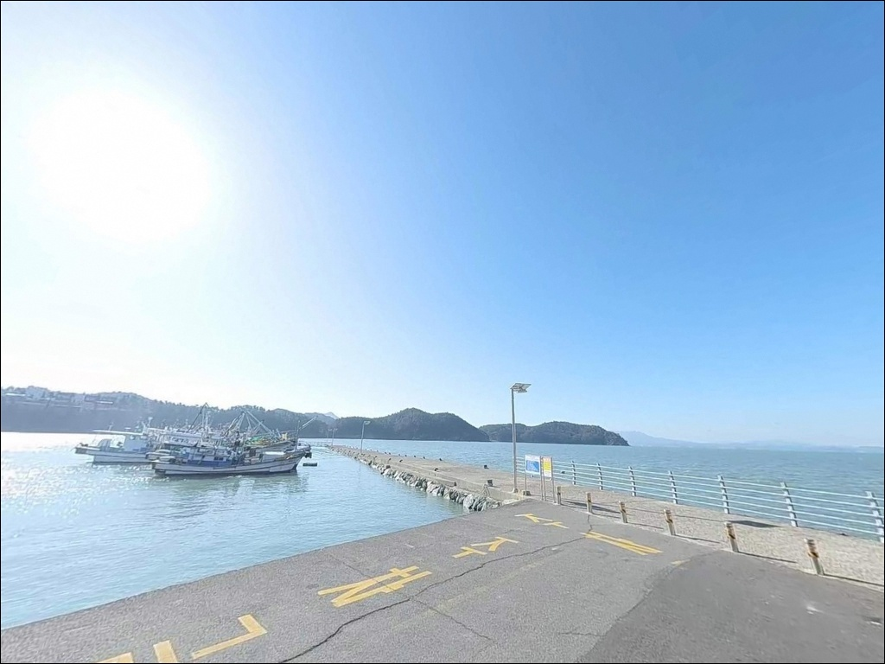
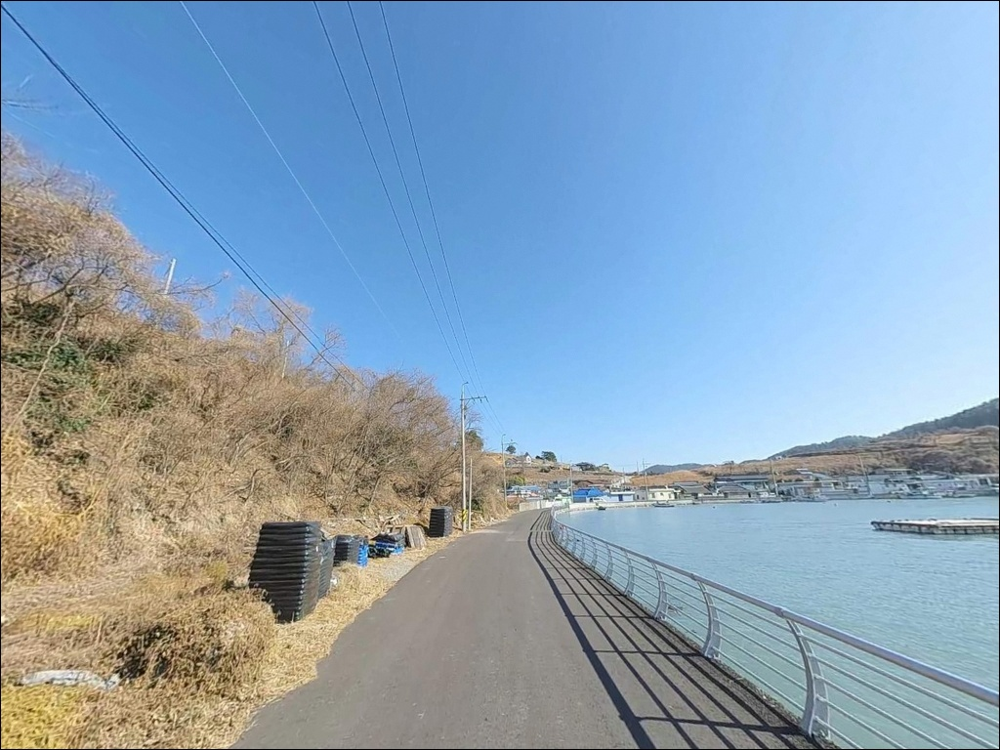

여수 감도항 에깅, 꼬막 양식장 경계부에서 확인된 갑오징어 입질
이 페이지에는 광고(제휴 링크 포함)가 있으며, 광고 링크를 통해 구매하면 운영자가 판매 수익 또는 수수료를 받을 수 있습니다. 포인트 사진: 카카오맵 스카이뷰·로드뷰. 이 페이지의 지도·사진 이미지는 카카오맵의 실제 서비스 이미지와 다를 수 있습니다.


포인트 안내
감도항
전남 여수시 화양면 이천리 643-3
감도항에서 가장 많이 놓치는 판단은
방파제 구조만 보고 진입하는 것입니다.
이 포인트는 꼬막 양식장과 어선 항로가
낚시 자리와 맞물려 있어,
캐스팅 방향을 잘못 잡으면
어구에 걸리거나 민원이 발생하는 상황으로
이어질 수 있습니다.
여자만 동쪽 연안에 자리한 감도항은
외해 직접 노출이 적은 내만형 포인트로,
가을 시즌 갑오징어 에깅과
워킹 루어낚시 포인트로 알려진 곳입니다.
이 글은 감도항의 진입 환경, 낚시 여건,
차박 체류 조건에 집중합니다.
조황 단정이나 특정 어종 보장은
이 글의 범위에 포함되지 않습니다.

1. 진입 동선과 포인트 접근 조건
감도항은 화양면 내부 지방도에서
감도해변 방향으로 이어지는 2차선 도로와
직접 연결되어 있습니다.
전 구간 포장도로이며 급경사 구간이 없어
초행 차량도 내비게이션 주소만으로
무리 없이 진입할 수 있습니다.
항 입구까지 차량이 직접 연결되는 구조로,
항 내부 선착장 진입로와
어선 작업 공간 뒤편에
노상 주차가 가능한 공터와 도로 가장자리가
형성되어 있습니다.
소형 차량 기준으로 회차와 단기 주차가
가능한 수준이며,
대형 카라반이나 캠핑카는
진입 전 위성지도 확인이 먼저입니다.
감도해변길과 인근 펜션단지로 이어지는
해안도로 구간에도
노상 주차 여유 공간이 분포해 있어,
감도항 단독이 아니라
해안도로 구간 전체를 주차 후보지로
운용하는 방식이 현실적입니다.

2. 차박 환경과 야간 체류 여건
감도항은 감도마을 민박과
인근 펜션단지가 함께 위치한 어촌 마을 항으로,
완전 고립된 노지 차박지와는 분위기가 다릅니다.
항 주변에 가로등이 설치되어 있어
야간 낚시 여건은 양호하며,
마을과 적당한 거리가 유지되는
선착장 쪽 공간에서 프라이버시 확보가
가능한 구조입니다.
여자만 내만 특성상 외해에 직접 노출되지 않아
강풍·높은 파고 영향이 적고,
야간 차량 생활 시 환경 자체는
안정적인 편입니다.
다만 새벽 출항 어선과
마을 주민 생활구역이 인접해 있어,
심야 엔진 소음과 조명 직사는
자제하는 것이 기본 매너입니다.


3. 주변 편의시설 및 인프라 현황
감도항 직접 반경에는 편의점이나
주유소가 확인되지 않습니다.
화양면 소재지 방향으로 차량으로
10~15분 이동하면
화양농협, 면 단위 마트와 식당이 있어
기본 보급이 가능합니다.
식수·얼음·채비 소품은 출발 전 갖추고
진입하는 것이 현실적인 준비입니다.
반경 3km 내 감도민박과
인근 펜션들이 분포해 있어
당일 낚시 외 1박 숙박형 출조 구성도 가능합니다.
화양면 소재지 방면으로 이동하면
24시 편의점과 약국 이용이 가능해
응급 상황 대응 동선도
미리 확인해두는 편이 좋습니다.

4. 방문 전 반드시 확인할 준비사항
감도항 방문 전 가장 먼저 확인할 것은
출조 시즌입니다.
이 포인트는 가을 시즌 갑오징어 에깅으로
낚시객이 집중되는 구조이며,
성수기에는 주차 공간이 빠르게 채워집니다.
주차 가능 시간대를 감안해
이른 시간 진입을 기본 전략으로 잡는 것이 좋습니다.
여자만 내만이라도 남풍 계열 강풍 시에는
파고가 빠르게 형성됩니다.
출조 전 기상청 해양특보를
반드시 확인하는 것이 기본입니다.
꼬막 양식장과 어선 항로가 낚시 자리와
맞닿아 있는 구조이므로,
캐스팅 방향을 항로와 양식장 방향이 아닌
외항 수면 쪽으로 설정하는 것이
첫 번째 현장 확인 사항입니다.
방파제 외항 테트라포트는
이끼가 낄 경우 미끄러운 구간이 형성되므로
미끄럼 방지 신발과 헤드랜턴을 챙기고,
구명조끼는 낚시 시작부터 착용하는 것이
기본 안전 수칙입니다.

5. 지형 기반 낚시 여건 분석
감도항은 방파제 약 125m와
선착장 약 49m로 구성된
어촌정주어항입니다.
외항 쪽은 방파제 끝단으로 갈수록
수심이 깊어지는 구조로,
끝단 정면은 수심 8~10m 내외까지 내려가며
간조 시에도 선착장 앞단은
3~5m 이상 수심이 유지됩니다.
방파제와 선착장 주변에는
꼬막 양식장과 패류 양식 구조물이 분포해 있어
수중 구조물이 풍부한 해역을 형성합니다.
끝지점과 양식장 경계부에서
수심이 급변하는 지형 특성이 있어,
경계 라인을 따라 캐스팅하는 방식이
이 포인트에서 유효한 공략법입니다.
여자만 내만 특성상 조류가 남북으로 흐르며,
방파제 끝단에서 흐름이 집중되는 구조입니다.
조류가 살아 있는 타이밍에는
회유성 어종의 접근이 확인되며,
정조 전후에는 바닥층 공략이
더 안정적인 편입니다.
최신 조황은 출조 전
감도항 낚시 키워드로 검색해 보시기 바랍니다.


6. 포인트에 어울리는 낚시 스타일이 달라지는 조건
가을 시즌 감도항에서 가장 집중되는 방식은
갑오징어 에깅입니다.
내항·선착장 라인은 가을 기준
수심과 조류 조건이 에깅 채비에
잘 맞는 구조이며,
꼬막 양식장 경계부와 방파제 끝단 주변이
집중 공략 구간입니다.
삼치와 회유성 어종을 노리는
루어낚시도 이 포인트에 어울립니다.
외항 방파제와 양식장 경계 수역에서
메탈지그나 스푼을 활용한
워킹 루어낚시가 가능하며,
야간에는 가로등 집어등 영향권 형성 구간에서
루어 반응이 올라오는 편입니다.
원투낚시는 내항과 외항 모두에서 운용이 가능합니다.
바닥이 펄·모래 혼합 지형인
여자만 특성상 가자미류·붕장어·숭어가
기대되는 어종입니다.
방파제 끝단 조류가 꺾이는 지점에서는
릴찌채비로 감성돔을 노리는 방식도
봄·가을 적기를 기준으로 유효합니다.

7. 대안 포인트와 플랜 B 동선
감도항 낚시 자리가 혼잡하거나
조류 조건이 맞지 않을 때
첫 번째 대안은
감도 선착장·마상리 선착장입니다.
같은 내만 해역을 공유하는
인접 워킹 포인트로,
도보 또는 차량 이동으로
바로 전환할 수 있는 거리입니다.
갑오징어 에깅을 메인으로 출조할 경우
여수권 에깅 대표 포인트인
백야항을 함께 검토하는 것이
효율적인 동선입니다.
조류 흐름이 더 강하고
에깅 기록이 집중된 방파제로,
감도항과 계절·조황에 따라
교차 운용이 가능합니다.
화양면 소재지 방향의 나진항과
이목항·가정항도
같은 화양면 해역 내 대체 포인트로
활용할 수 있습니다.
나진항은 규모가 크고
편의 인프라 접근이 용이해
보급과 낚시를 함께 해결할 수 있는
대안 거점입니다.

접근성과 지형 조건이 맞는다면
감도항은 가을 에깅의 선택지가 됩니다
갑오징어 에깅이나 워킹 루어를
즐기는 낚시인이라면
감도항의 방파제 구조와
내만 수심 조건은 잘 맞는 편입니다.
포장도로 진입에 노상 주차까지 가능해
장비를 많이 챙기는 출조자에게도
접근 부담이 적습니다.
반면 꼬막 양식장과 어선 항로가
낚시 자리와 맞닿아 있어
캐스팅 방향을 잘못 잡으면
어구 접촉이나 민원으로 이어집니다.
캐스팅 방향 확인, 어선 동선 파악, 양식장 경계 인지,
이 세 가지를 현장에서 먼저 확인하고
자리를 잡아야 하는 포인트입니다.
낚시 후 감도해변길을 따라
조용히 하룻밤 머무는 구성이라면
내만 특성상 파도와 바람 영향이 적어
편안한 차박 체류가 가능한 편이며,
여수 화양면 일대를 넓게 돌아보는
출조 동선의 거점 포인트로
활용할 수 있는 곳입니다.